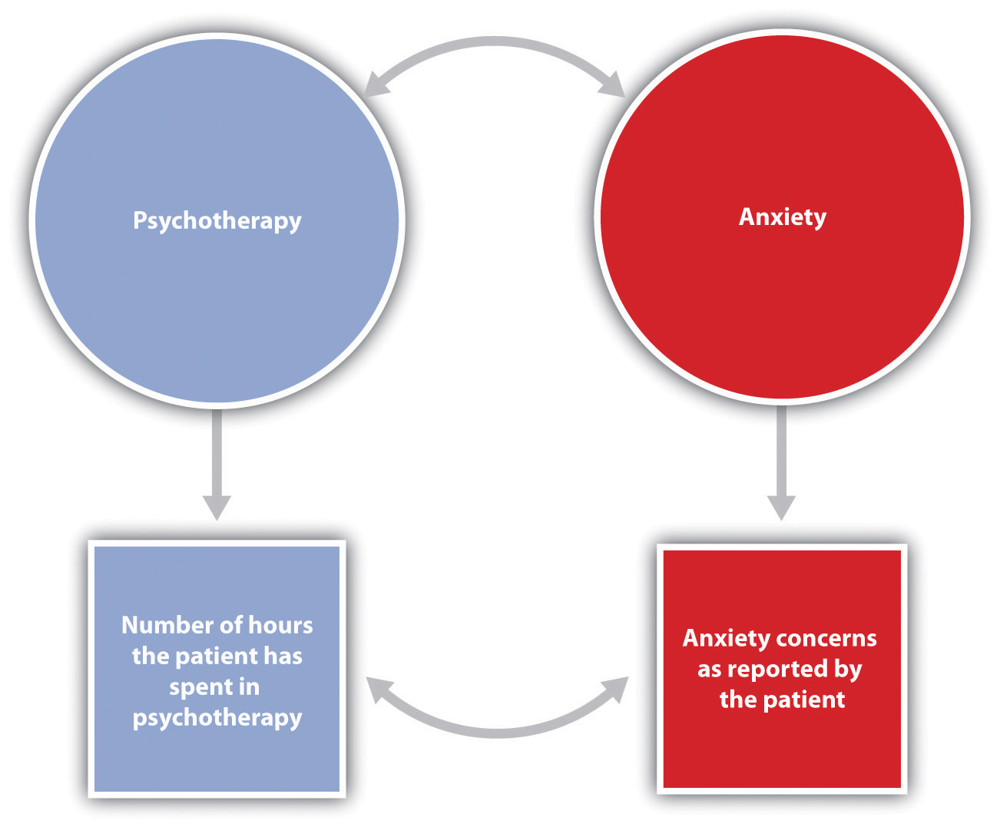
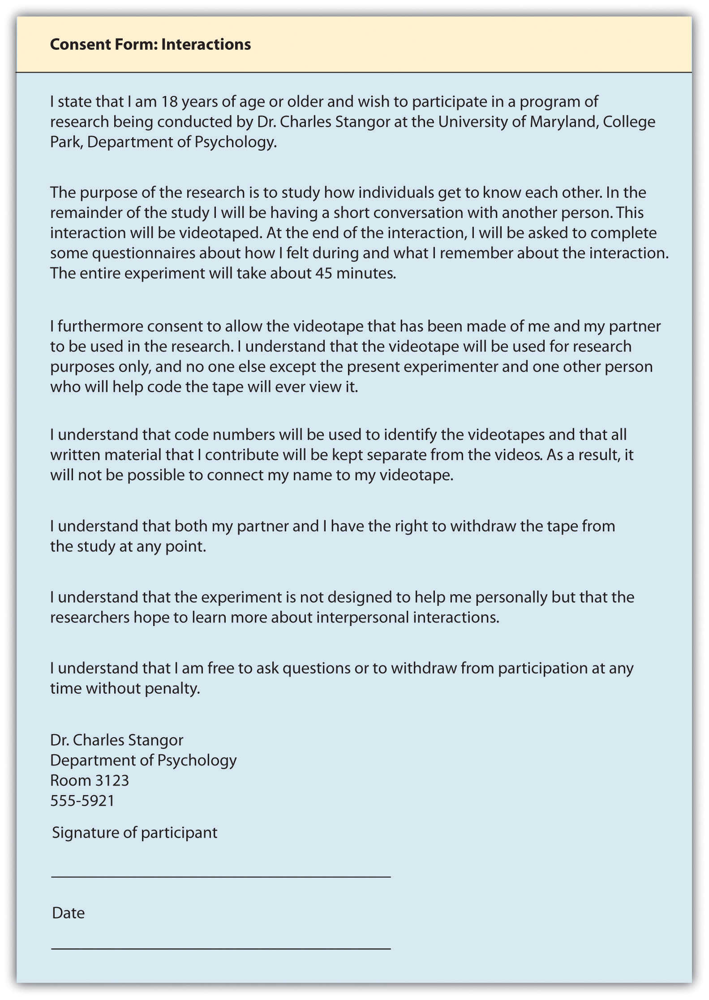

Psychologists aren’t the only people who seek to understand human behavior and solve social problems. Philosophers, religious leaders, and politicians, among others, also strive to provide explanations for human behavior. But psychologists believe that research is the best tool for understanding human beings and their relationships with others. Rather than accepting the claim of a philosopher that people do (or do not) have free will, a psychologist would collect data to empirically test whether or not people are able to actively control their own behavior. Rather than accepting a politician’s contention that creating (or abandoning) a new center for mental health will improve the lives of individuals in the inner city, a psychologist would empirically assess the effects of receiving mental health treatment on the quality of life of the recipients. The statements made by psychologists are empiricalBased on systematic collection and analysis of data., which means they are based on systematic collection and analysis of data.
All scientists (whether they are physicists, chemists, biologists, sociologists, or psychologists) are engaged in the basic processes of collecting data and drawing conclusions about those data. The methods used by scientists have developed over many years and provide a common framework for developing, organizing, and sharing information. The scientific methodThe set of assumptions, rules, and procedures scientists use to conduct research. is the set of assumptions, rules, and procedures scientists use to conduct research.
In addition to requiring that science be empirical, the scientific method demands that the procedures used be objectiveFree from the personal bias or emotions of the scientist., or free from the personal bias or emotions of the scientist. The scientific method proscribes how scientists collect and analyze data, how they draw conclusions from data, and how they share data with others. These rules increase objectivity by placing data under the scrutiny of other scientists and even the public at large. Because data are reported objectively, other scientists know exactly how the scientist collected and analyzed the data. This means that they do not have to rely only on the scientist’s own interpretation of the data; they may draw their own, potentially different, conclusions.
Most new research is designed to replicate—that is, to repeat, add to, or modify—previous research findings. The scientific method therefore results in an accumulation of scientific knowledge through the reporting of research and the addition to and modifications of these reported findings by other scientists.
One goal of research is to organize information into meaningful statements that can be applied in many situations. Principles that are so general as to apply to all situations in a given domain of inquiry are known as lawsPrinciples that are so general as to apply to all situations in a given domain of inquiry.. There are well-known laws in the physical sciences, such as the law of gravity and the laws of thermodynamics, and there are some universally accepted laws in psychology, such as the law of effect and Weber’s law. But because laws are very general principles and their validity has already been well established, they are themselves rarely directly subjected to scientific test.
The next step down from laws in the hierarchy of organizing principles is theory. A theoryAn integrated set of principles that explains and predicts many, but not all, observed relationships within a given domain of inquiry. is an integrated set of principles that explains and predicts many, but not all, observed relationships within a given domain of inquiry. One example of an important theory in psychology is the stage theory of cognitive development proposed by the Swiss psychologist Jean Piaget. The theory states that children pass through a series of cognitive stages as they grow, each of which must be mastered in succession before movement to the next cognitive stage can occur. This is an extremely useful theory in human development because it can be applied to many different content areas and can be tested in many different ways.
Good theories have four important characteristics. First, good theories are general, meaning they summarize many different outcomes. Second, they are parsimonious, meaning they provide the simplest possible account of those outcomes. The stage theory of cognitive development meets both of these requirements. It can account for developmental changes in behavior across a wide variety of domains, and yet it does so parsimoniously—by hypothesizing a simple set of cognitive stages. Third, good theories provide ideas for future research. The stage theory of cognitive development has been applied not only to learning about cognitive skills, but also to the study of children’s moral (Kohlberg, 1966)Kohlberg, L. (1966). A cognitive-developmental analysis of children’s sex-role concepts and attitudes. In E. E. Maccoby (Ed.), The development of sex differences. Stanford, CA: Stanford University Press. and gender (Ruble & Martin, 1998)Ruble, D., & Martin, C. (1998). Gender development. In W. Damon (Ed.), Handbook of child psychology (5th ed., pp. 933–1016). New York, NY: John Wiley & Sons. development.
Finally, good theories are falsifiableA characteristic of a theory or research hypothesis in which the variables of interest can be adequately measured and the predicted relationships among the variables can be shown through research to be incorrect. (Popper, 1959),Popper, K. R. (1959). The logic of scientific discovery. New York, NY: Basic Books. which means the variables of interest can be adequately measured and the relationships between the variables that are predicted by the theory can be shown through research to be incorrect. The stage theory of cognitive development is falsifiable because the stages of cognitive reasoning can be measured and because if research discovers, for instance, that children learn new tasks before they have reached the cognitive stage hypothesized to be required for that task, then the theory will be shown to be incorrect.
No single theory is able to account for all behavior in all cases. Rather, theories are each limited in that they make accurate predictions in some situations or for some people but not in other situations or for other people. As a result, there is a constant exchange between theory and data: Existing theories are modified on the basis of collected data, and the new modified theories then make new predictions that are tested by new data, and so forth. When a better theory is found, it will replace the old one. This is part of the accumulation of scientific knowledge.
Theories are usually framed too broadly to be tested in a single experiment. Therefore, scientists use a more precise statement of the presumed relationship among specific parts of a theory—a research hypothesis—as the basis for their research. A research hypothesisA specific and falsifiable prediction about the relationship between or among two or more variables. is a specific and falsifiable prediction about the relationship between or among two or more variables, where a variableAny attribute that can assume different values among different people or across different times or places. is any attribute that can assume different values among different people or across different times or places. The research hypothesis states the existence of a relationship between the variables of interest and the specific direction of that relationship. For instance, the research hypothesis “Using marijuana will reduce learning” predicts that there is a relationship between a variable “using marijuana” and another variable called “learning.” Similarly, in the research hypothesis “Participating in psychotherapy will reduce anxiety,” the variables that are expected to be related are “participating in psychotherapy” and “level of anxiety.”
When stated in an abstract manner, the ideas that form the basis of a research hypothesis are known as conceptual variables. Conceptual variablesAbstract ideas that form the basis of research hypotheses. are abstract ideas that form the basis of research hypotheses. Sometimes the conceptual variables are rather simple—for instance, “age,” “gender,” or “weight.” In other cases the conceptual variables represent more complex ideas, such as “anxiety,” “cognitive development,” “learning,” self-esteem,” or “sexism.”
The first step in testing a research hypothesis involves turning the conceptual variables into measured variablesVariables consisting of numbers that represent the conceptual variables., which are variables consisting of numbers that represent the conceptual variables. For instance, the conceptual variable “participating in psychotherapy” could be represented as the measured variable “number of psychotherapy hours the patient has accrued” and the conceptual variable “using marijuana” could be assessed by having the research participants rate, on a scale from 1 to 10, how often they use marijuana or by administering a blood test that measures the presence of the chemicals in marijuana.
Psychologists use the term operational definitionA precise statement of how a conceptual variable is turned into a measured variable. to refer to a precise statement of how a conceptual variable is turned into a measured variable. The relationship between conceptual and measured variables in a research hypothesis is diagrammed in Figure 2.1 "Diagram of a Research Hypothesis". The conceptual variables are represented within circles at the top of the figure, and the measured variables are represented within squares at the bottom. The two vertical arrows, which lead from the conceptual variables to the measured variables, represent the operational definitions of the two variables. The arrows indicate the expectation that changes in the conceptual variables (psychotherapy and anxiety in this example) will cause changes in the corresponding measured variables. The measured variables are then used to draw inferences about the conceptual variables.
Figure 2.1 Diagram of a Research Hypothesis
In this research hypothesis, the conceptual variable of attending psychotherapy is operationalized using the number of hours of psychotherapy the client has completed, and the conceptual variable of anxiety is operationalized using self-reported levels of anxiety. The research hypothesis is that more psychotherapy will be related to less reported anxiety.
Table 2.1 "Examples of the Operational Definitions of Conceptual Variables That Have Been Used in Psychological Research" lists some potential operational definitions of conceptual variables that have been used in psychological research. As you read through this list, note that in contrast to the abstract conceptual variables, the measured variables are very specific. This specificity is important for two reasons. First, more specific definitions mean that there is less danger that the collected data will be misunderstood by others. Second, specific definitions will enable future researchers to replicate the research.
Table 2.1 Examples of the Operational Definitions of Conceptual Variables That Have Been Used in Psychological Research
| Conceptual variable | Operational definitions |
|---|---|
| Aggression |
|
| Interpersonal attraction |
|
| Employee satisfaction |
|
| Decision-making skills |
|
| Depression |
|
One of the questions that all scientists must address concerns the ethics of their research. Physicists are concerned about the potentially harmful outcomes of their experiments with nuclear materials. Biologists worry about the potential outcomes of creating genetically engineered human babies. Medical researchers agonize over the ethics of withholding potentially beneficial drugs from control groups in clinical trials. Likewise, psychologists are continually considering the ethics of their research.
Research in psychology may cause some stress, harm, or inconvenience for the people who participate in that research. For instance, researchers may require introductory psychology students to participate in research projects and then deceive these students, at least temporarily, about the nature of the research. Psychologists may induce stress, anxiety, or negative moods in their participants, expose them to weak electrical shocks, or convince them to behave in ways that violate their moral standards. And researchers may sometimes use animals in their research, potentially harming them in the process.
Decisions about whether research is ethical are made using established ethical codes developed by scientific organizations, such as the American Psychological Association, and federal governments. In the United States, the Department of Health and Human Services provides the guidelines for ethical standards in research. Some research, such as the research conducted by the Nazis on prisoners during World War II, is perceived as immoral by almost everyone. Other procedures, such as the use of animals in research testing the effectiveness of drugs, are more controversial.
Scientific research has provided information that has improved the lives of many people. Therefore, it is unreasonable to argue that because scientific research has costs, no research should be conducted. This argument fails to consider the fact that there are significant costs to not doing research and that these costs may be greater than the potential costs of conducting the research (Rosenthal, 1994).Rosenthal, R. (1994). Science and ethics in conducting, analyzing, and reporting psychological research. Psychological Science, 5, 127–134. In each case, before beginning to conduct the research, scientists have attempted to determine the potential risks and benefits of the research and have come to the conclusion that the potential benefits of conducting the research outweigh the potential costs to the research participants.
This list presents some of the most important factors that psychologists take into consideration when designing their research. The most direct ethical concern of the scientist is to prevent harm to the research participants. One example is the well-known research of Stanley Milgram (1974)Milgram, S. (1974). Obedience to authority: An experimental view. New York, NY: Harper and Row. investigating obedience to authority. In these studies, participants were induced by an experimenter to administer electric shocks to another person so that Milgram could study the extent to which they would obey the demands of an authority figure. Most participants evidenced high levels of stress resulting from the psychological conflict they experienced between engaging in aggressive and dangerous behavior and following the instructions of the experimenter. Studies such as those by Milgram are no longer conducted because the scientific community is now much more sensitized to the potential of such procedures to create emotional discomfort or harm.
Another goal of ethical research is to guarantee that participants have free choice regarding whether they wish to participate in research. Students in psychology classes may be allowed, or even required, to participate in research, but they are also always given an option to choose a different study to be in, or to perform other activities instead. And once an experiment begins, the research participant is always free to leave the experiment if he or she wishes to. Concerns with free choice also occur in institutional settings, such as in schools, hospitals, corporations, and prisons, when individuals are required by the institutions to take certain tests, or when employees are told or asked to participate in research.
Researchers must also protect the privacy of the research participants. In some cases data can be kept anonymous by not having the respondents put any identifying information on their questionnaires. In other cases the data cannot be anonymous because the researcher needs to keep track of which respondent contributed the data. In this case one technique is to have each participant use a unique code number to identify his or her data, such as the last four digits of the student ID number. In this way the researcher can keep track of which person completed which questionnaire, but no one will be able to connect the data with the individual who contributed them.
Perhaps the most widespread ethical concern to the participants in behavioral research is the extent to which researchers employ deception. DeceptionA situation that occurs whenever research participants are not completely and fully informed about the nature of the research project before participating in it. occurs whenever research participants are not completely and fully informed about the nature of the research project before participating in it. Deception may occur in an active way, such as when the researcher tells the participants that he or she is studying learning when in fact the experiment really concerns obedience to authority. In other cases the deception is more passive, such as when participants are not told about the hypothesis being studied or the potential use of the data being collected.
Some researchers have argued that no deception should ever be used in any research (Baumrind, 1985).Baumrind, D. (1985). Research using intentional deception: Ethical issues revisited. American Psychologist, 40, 165–174. They argue that participants should always be told the complete truth about the nature of the research they are in, and that when participants are deceived there will be negative consequences, such as the possibility that participants may arrive at other studies already expecting to be deceived. Other psychologists defend the use of deception on the grounds that it is needed to get participants to act naturally and to enable the study of psychological phenomena that might not otherwise get investigated. They argue that it would be impossible to study topics such as altruism, aggression, obedience, and stereotyping without using deception because if participants were informed ahead of time what the study involved, this knowledge would certainly change their behavior. The codes of ethics of the American Psychological Association and other organizations allow researchers to use deception, but these codes also require them to explicitly consider how their research might be conducted without the use of deception.
Making decisions about the ethics of research involves weighing the costs and benefits of conducting versus not conducting a given research project. The costs involve potential harm to the research participants and to the field, whereas the benefits include the potential for advancing knowledge about human behavior and offering various advantages, some educational, to the individual participants. Most generally, the ethics of a given research project are determined through a cost-benefit analysis, in which the costs are compared to the benefits. If the potential costs of the research appear to outweigh any potential benefits that might come from it, then the research should not proceed.
Arriving at a cost-benefit ratio is not simple. For one thing, there is no way to know ahead of time what the effects of a given procedure will be on every person or animal who participates or what benefit to society the research is likely to produce. In addition, what is ethical is defined by the current state of thinking within society, and thus perceived costs and benefits change over time. The U.S. Department of Health and Human Services regulations require that all universities receiving funds from the department set up an Institutional Review Board (IRB) to determine whether proposed research meets department regulations. The Institutional Review Board (IRB)A committee of at least five members whose goal it is to determine cost-benefit ratio of research conducted within an institution. is a committee of at least five members whose goal it is to determine the cost-benefit ratio of research conducted within an institution. The IRB approves the procedures of all the research conducted at the institution before the research can begin. The board may suggest modifications to the procedures, or (in rare cases) it may inform the scientist that the research violates Department of Health and Human Services guidelines and thus cannot be conducted at all.
One important tool for ensuring that research is ethical is the use of informed consent. A sample informed consent form is shown in Figure 2.2 "Sample Consent Form". Informed consentA procedure, conducted before a participant begins a research session, designed to explain the research procedures and inform the participant of his or her rights during the investigation., conducted before a participant begins a research session, is designed to explain the research procedures and inform the participant of his or her rights during the investigation. The informed consent explains as much as possible about the true nature of the study, particularly everything that might be expected to influence willingness to participate, but it may in some cases withhold some information that allows the study to work.
Figure 2.2 Sample Consent Form
The informed consent form explains the research procedures and informs the participant of his or her rights during the investigation.
Source: Adapted from Stangor, C. (2011). Research methods for the behavioral sciences (4th ed.). Mountain View, CA: Cengage.
Because participating in research has the potential for producing long-term changes in the research participants, all participants should be fully debriefed immediately after their participation. The debriefingA procedure designed to fully explain the purposes and procedures of the research and remove any harmful aftereffects of participation. is a procedure designed to fully explain the purposes and procedures of the research and remove any harmful aftereffects of participation.
Because animals make up an important part of the natural world, and because some research cannot be conducted using humans, animals are also participants in psychological research. Most psychological research using animals is now conducted with rats, mice, and birds, and the use of other animals in research is declining (Thomas & Blackman, 1992).Thomas, G., & Blackman, D. (1992). The future of animal studies in psychology. American Psychologist, 47, 1678. As with ethical decisions involving human participants, a set of basic principles has been developed that helps researchers make informed decisions about such research; a summary is shown below.
The following are some of the most important ethical principles from the American Psychological Association’s guidelines on research with animals.
Because the use of animals in research involves a personal value, people naturally disagree about this practice. Although many people accept the value of such research (Plous, 1996),Plous, S. (1996). Attitudes toward the use of animals in psychological research and education. Psychological Science, 7, 352–358. a minority of people, including animal-rights activists, believes that it is ethically wrong to conduct research on animals. This argument is based on the assumption that because animals are living creatures just as humans are, no harm should ever be done to them.
Most scientists, however, reject this view. They argue that such beliefs ignore the potential benefits that have and continue to come from research with animals. For instance, drugs that can reduce the incidence of cancer or AIDS may first be tested on animals, and surgery that can save human lives may first be practiced on animals. Research on animals has also led to a better understanding of the physiological causes of depression, phobias, and stress, among other illnesses. In contrast to animal-rights activists, then, scientists believe that because there are many benefits that accrue from animal research, such research can and should continue as long as the humane treatment of the animals used in the research is guaranteed.